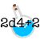

Potion of Healing
We’ll get through this together, okay? I have a ton of techniques I’ve seen soul-touched folks do to ground themselves, so we can go through them together and see if any of them stick.
If you’re low on time or need to multitask, here are some quick activities you can try to improve your mental health:
- take deep breaths
- listen to music, either upbeat or calming
- make tea or another hot or cold drink of choice
- list everything that you’ve accomplished today or this week, even the little things, so you can appreciate the progress you’ve already made
- get some fresh air
- wiggle
- stretch
- doodle or make geometric patterns
- color in a coloring page
- make a friendship bracelet
- fidget with a small object or stuffed animal
If you have more time, here are some longer activities:
- try a breathing exercise online
- expose yourself to strong, pleasant sensations, like a pleasing smell or a favorite blanket
- take 15 minutes and accomplish something small, like loading the dishwasher or folding clothes
- write in your journal
- take a mindful walk
- dance
- reach out to someone you trust and talk to them
- play with a pet
- try a yoga or other exercise video online
- I’ve tried one of these activities or another activity that works for me, and I’m ready to move on.